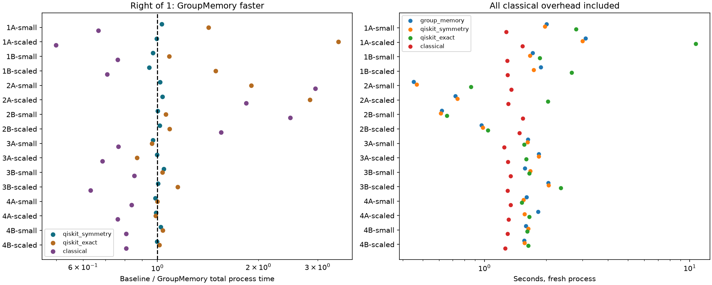

**Local ideal CPU simulation; no QPU or noisy-hardware speedup claim.**

Successful attempts: 960/960. Correctness-matched quantum blocks: 240/240. Maximum saved-output disagreement: 2.31e-13.
Times below include a fresh interpreter, imports, data preparation, model construction, compilation, canonicalization, computation, fitting, predictions, JSON writing and shutdown. Installation is excluded. Independent correctness preflight, orchestration and reporting are separately recorded. Test views are related augmentations, not independent test samples.
| Condition | Group time | Symmetry Qiskit time | Exact-cache Qiskit time | Classical time | Group / classical task metric |
| 1A-small | 2.003 s | 1.967 s | 2.790 s | 1.277 s | heldout_accuracy: 0.875 / 1 |
| 1A-scaled | 3.108 s | 3.005 s | 10.697 s | 1.529 s | heldout_accuracy: 0.925 / 1 |
| 1B-small | 1.715 s | 1.664 s | 1.859 s | 1.288 s | heldout_mse: 0.01765 / 0.01679 |
| 1B-scaled | 1.878 s | 1.736 s | 2.655 s | 1.297 s | heldout_mse: 0.01448 / 0.01358 |
| 2A-small | 0.451 s | 0.468 s | 0.860 s | 1.350 s | heldout_accuracy: 1 / 1 |
| 2A-scaled | 0.720 s | 0.738 s | 2.035 s | 1.307 s | heldout_accuracy: 1 / 1 |
| 2B-small | 0.620 s | 0.612 s | 0.655 s | 1.540 s | heldout_mse: 0.02347 / 0.007433 |
| 2B-scaled | 0.966 s | 0.981 s | 1.038 s | 1.480 s | heldout_mse: 0.02206 / 0.003322 |
| 3A-small | 1.629 s | 1.618 s | 1.561 s | 1.246 s | heldout_accuracy: 0.9875 / 0.75 |
| 3A-scaled | 1.840 s | 1.839 s | 1.597 s | 1.301 s | heldout_accuracy: 1 / 0.975 |
| 3B-small | 1.572 s | 1.669 s | 1.654 s | 1.341 s | heldout_accuracy: 1 / 0.75 |
| 3B-scaled | 2.044 s | 2.051 s | 2.357 s | 1.293 s | heldout_accuracy: 1 / 0.975 |
| 4A-small | 1.602 s | 1.546 s | 1.520 s | 1.342 s | heldout_accuracy: 0.9667 / 1 |
| 4A-scaled | 1.824 s | 1.568 s | 1.650 s | 1.309 s | heldout_accuracy: 1 / 1 |
| 4B-small | 1.592 s | 1.633 s | 1.614 s | 1.295 s | heldout_accuracy: 0.9667 / 0.9667 |
| 4B-scaled | 1.559 s | 1.566 s | 1.634 s | 1.260 s | heldout_accuracy: 0.9667 / 0.9667 |
Speedup >1 means GroupMemory is faster. Each seed contributes the median of all matching timing repeats. A descriptive win requires five complete seeds, every seed median faster and a median paired saving of at least 5%. This is not a confidence claim or a universal crossover. Classical quality can differ; its time ratio alone does not establish equal-task superiority. In 4B the analytic classical control computes the same features and trained readout, with explicit output checks.
| Condition | Baseline | All-in speedup | Application speedup | Eligible descriptive win |
| 1A-small | qiskit_symmetry | 1.030× | 1.016× | False |
| 1A-small | qiskit_exact | 1.419× | 2.529× | True |
| 1A-small | classical | 0.667× | 0.013× | False |
| 1A-scaled | qiskit_symmetry | 0.994× | 0.984× | False |
| 1A-scaled | qiskit_exact | 3.460× | 6.004× | True |
| 1A-scaled | classical | 0.499× | 0.007× | False |
| 1B-small | qiskit_symmetry | 0.970× | 1.054× | False |
| 1B-small | qiskit_exact | 1.084× | 1.316× | False |
| 1B-small | classical | 0.761× | 0.024× | False |
| 1B-scaled | qiskit_symmetry | 0.944× | 0.915× | False |
| 1B-scaled | qiskit_exact | 1.493× | 3.033× | True |
| 1B-scaled | classical | 0.708× | 0.026× | False |
| 2A-small | qiskit_symmetry | 1.018× | 1.008× | False |
| 2A-small | qiskit_exact | 1.905× | 2.265× | True |
| 2A-small | classical | 2.953× | 3.590× | True |
| 2A-scaled | qiskit_symmetry | 1.035× | 1.035× | False |
| 2A-scaled | qiskit_exact | 2.844× | 3.309× | True |
| 2A-scaled | classical | 1.839× | 1.914× | True |
| 2B-small | qiskit_symmetry | 1.000× | 1.010× | False |
| 2B-small | qiskit_exact | 1.058× | 1.061× | True |
| 2B-small | classical | 2.487× | 2.727× | True |
| 2B-scaled | qiskit_symmetry | 1.015× | 0.994× | False |
| 2B-scaled | qiskit_exact | 1.086× | 1.100× | True |
| 2B-scaled | classical | 1.548× | 1.587× | True |
| 3A-small | qiskit_symmetry | 0.970× | 0.979× | False |
| 3A-small | qiskit_exact | 0.962× | 0.973× | False |
| 3A-small | classical | 0.765× | 0.772× | False |
| 3A-scaled | qiskit_symmetry | 0.998× | 0.994× | False |
| 3A-scaled | qiskit_exact | 0.869× | 0.851× | False |
| 3A-scaled | classical | 0.685× | 0.661× | False |
| 3B-small | qiskit_symmetry | 1.045× | 1.049× | False |
| 3B-small | qiskit_exact | 1.035× | 1.045× | False |
| 3B-small | classical | 0.853× | 0.847× | False |
| 3B-scaled | qiskit_symmetry | 1.005× | 0.980× | False |
| 3B-scaled | qiskit_exact | 1.150× | 1.161× | True |
| 3B-scaled | classical | 0.631× | 0.610× | False |
| 4A-small | qiskit_symmetry | 0.986× | 0.988× | False |
| 4A-small | qiskit_exact | 0.998× | 0.982× | False |
| 4A-small | classical | 0.837× | 0.840× | False |
| 4A-scaled | qiskit_symmetry | 0.991× | 0.992× | False |
| 4A-scaled | qiskit_exact | 0.988× | 0.971× | False |
| 4A-scaled | classical | 0.762× | 0.729× | False |
| 4B-small | qiskit_symmetry | 1.023× | 1.007× | False |
| 4B-small | qiskit_exact | 1.037× | 1.041× | False |
| 4B-small | classical | 0.807× | 0.795× | False |
| 4B-scaled | qiskit_symmetry | 0.998× | 1.003× | False |
| 4B-scaled | qiskit_exact | 1.012× | 1.022× | False |
| 4B-scaled | classical | 0.807× | 0.807× | False |
- Equally informed Qiskit uses the same supplied symmetries, canonical quantum jobs, simulator and compilation settings; GroupMemory uses a dictionary and the baseline uses vectorized unique planning.
- `qiskit_exact` is a secondary control with ordinary exact-input caches; it is not the primary comparison.
- CNOT totals count gates in simulated preparations/evaluations actually performed. Avoided evaluations are not a reduction in each native circuit.
- Kernel overlaps, reverse differentiation and the local closed-form classical control are classical computations. They are not measured QPU circuits.
- Large conceptual width in 4B uses exact small backward cones and does not simulate the full global state.
- Exact statevector equality does not prove identical noisy-device results. Hardware noise may break symmetry.
- Missing/error/timeout attempts remain in attempts.csv and do not enter matched summaries.
Sum of worker process walls: 1733.505 s. Campaign elapsed from its first start: 1736.738 s.